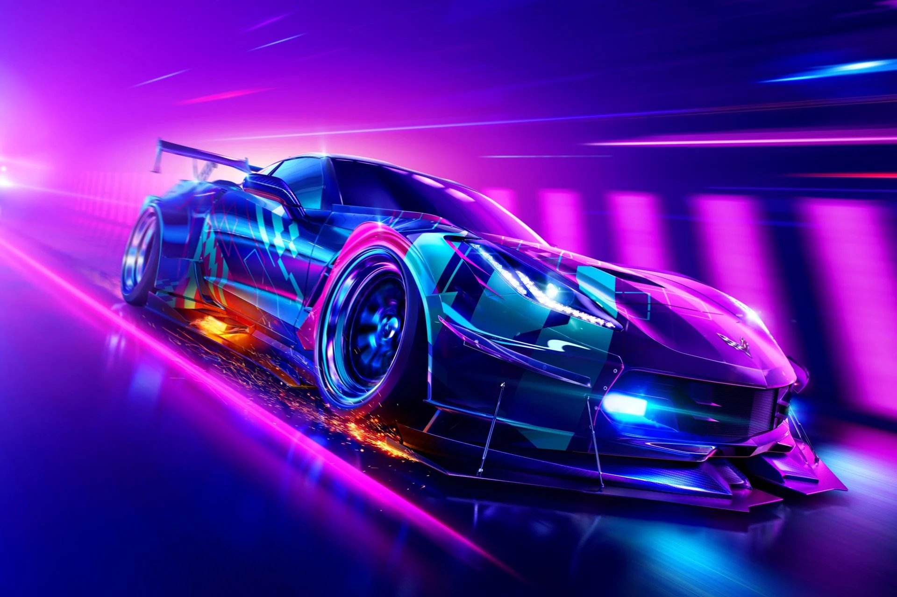

need for speed
این دسته از مسابقات در سبکهای مختلفی نظیر دریفت، آفرود و مسابقات Circuit طراحی شدهاند و با کامل کردن هر سری از مسابقات یک کاراکتر، پاداشهای متفاوتی را کسب میکنید. برای مثال با تمام کردن سری مسابقات کاراکتر دکس (Dex)، یک آپگرید ماشین را دریافت میکنید. یکی از مواردیکه میتواند موفقیت یا عدم موفقیت یک بازی ماشینسواری را تضمین کند، محتویاتی است که توسط تیم سازنده در اختیار مخاطب قرار داده میشود

blur
بازی کامپیوتر Blur یکی از بازی های سبک ورزشی و مسابقه ای است که توسط Bizarre Creations طراحی و ساخته شده و در سال 2010 توسط کمپانی Activision Blizzard برای پلتفرم PC به بازار عرضه شده است.
در این بازی شما به عنوان یک راننده حرفه ای در مسابقات شرکت کرده و باید سایر رقبا را پشت سر بگذارید و از خط پایان عبور کنید.
ماشین ها به بخش های مختلف شتاب، سرعت، دریفت، قدرت و پایداری تقسیم میشوند. برخی اتومبیل ها توسط کمپانی سازنده طراحی شده و در دنیای واقعی وجود ندارد.